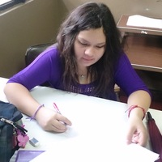
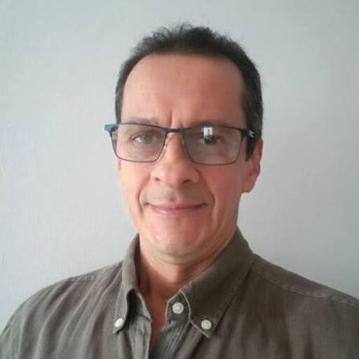

Prof. Dr. Alexis Chacón
Investigador principal · Director del grupo
Física de attosegundos · Materiales cuánticos · Generación de armónicos de alto orden
El equipo humano detrás de nuestra investigación: personas de distintas trayectorias unidas por la curiosidad científica.


Estudiantes y egresados.